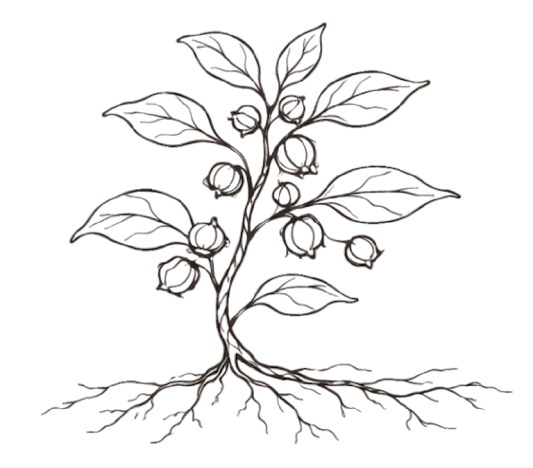

מפגש ראשון
מפגש מעמיק של כשעתיים, הכולל שיחה יסודית על הרקע הבריאותי, ההרגלים, התחושות והמטרה שאליה רוצים להגיע. עלות המפגש: 300 ש״ח.

אורן עמנואל שושנה הרבליסט קליניטיפול בצמחי מרפא
טיפול הרבליסטי מתחיל בשיחה קשובה ובהיכרות עם האדם השלם: הגוף, השגרה, ההיסטוריה הבריאותית, העומסים והכוחות שכבר קיימים.
מה זה אומר בעצם
בטיפול בצמחי מרפא בונים פורמולה אישית: תמציות, חליטות או רקיחות שנבחרות לפי הצורך, הרגישויות, התרופות הקיימות והמטרה הטיפולית. הצמחים אינם מוצר מדף קבוע, אלא שפה טיפולית שמותאמת לאדם שמגיע.
התהליך יכול להתאים למצבים כמו סטרס יומיומי, חרדות ולחצים, דיכאון, קשיי שינה, עייפות, מחלות כרוניות של מערכת העיכול ומחלות עור כרוניות. צמחי מרפא יכולים לסייע גם במצבים של חוסר איזון הורמונלי אצל נשים, ובהם כאבי וסת, מחזור לא סדיר, PMS חמור, אתגרי פוריות ואנדומטריוזיס.
לעיתים הטיפול בצמחי מרפא דורש יותר זמן מטיפול תרופתי מודרני, משום שמטרתו אינה רק להקל במהירות על סימפטום, אלא לתמוך באופן הדרגתי בתהליכים הטבעיים של הגוף ולחזק את יכולתו להתמודד לאורך זמן, ולרפא בעצמו את מקור הבעיה. הקצב משתנה מאדם לאדם ותלוי במצב, במשך הזמן שהוא קיים ובתגובה האישית לטיפול. הטיפול יכול לעמוד בפני עצמו או להשתלב לצד טיפול רפואי, מתוך זהירות, מעקב ושיקול דעת.
מפגש מעמיק של כשעתיים, הכולל שיחה יסודית על הרקע הבריאותי, ההרגלים, התחושות והמטרה שאליה רוצים להגיע. עלות המפגש: 300 ש״ח.
אורן רוקח תערובת צמחים מותאמת, עם הנחיות שימוש פשוטות וברורות להמשך הדרך. עלות הפורמולה נפרדת ונקבעת לפי הצרכים האישיים של כל מטופל.
במפגשי ביקורת של כשעה בודקים איך הגוף מגיב, מדייקים מינונים וצמחים ומתקדמים בקצב שמתאים לחיים. עלות מפגש ביקורת: 120 ש״ח. הטיפול כולל גם שיחות ייעוץ ללא תשלום, לפי הצורך.
לאנשים שמתמודדים עם עומס רגשי או גופני, קשיי שינה, עייפות, בעיות עיכול, חוסר איזון הורמונלי או מחלות עור כרוניות, ורוצים לקבל תמיכה טבעית ומותאמת ולבנות תהליך שמתחבר לחיים עצמם.
אפשר להיפגש בקליניקה של אורן בקדיתא שבגליל העליון, או בבית הלקוח לפי צורך, נוחות ותיאום מראש.
שיחה להתייעצות זה חינם. לפעמים כמה דקות מספיקות כדי להבין אם זה הכיוון הנכון.
לתיאום שיחה